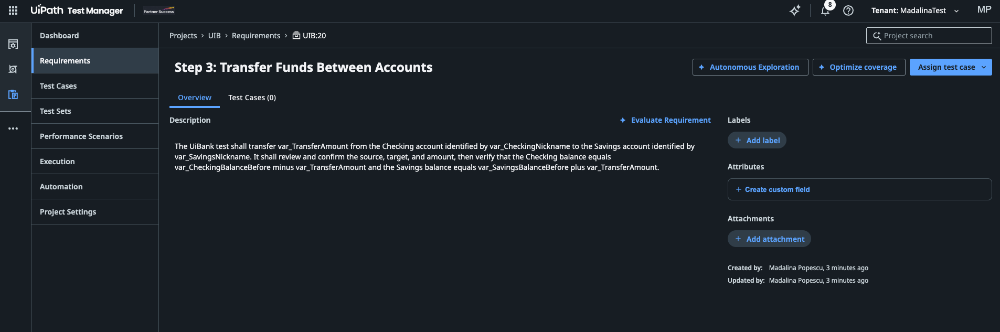

动手实践 · 第 1 部分（共 4 部分）
📋 需求¶
- 在 Studio 中打开你的
{YourName}UiBankTests项目，并已连接到你的 {YourName}_UIB_Test Test Manager 项目。参见环境准备。 - 在浏览器中打开同一租户上的 Test Manager。
🪄 让 Studio 中的 Autopilot 创建需求¶
设计文档进去，需求出来，全程没人需要手敲一个字。
- 在 Studio 中打开 Autopilot 面板。
-
将
E2E UiBank Online Banking.docx附加到对话中，然后给 Autopilot 输入以下提示词： -
查看 Autopilot 给出的方案，然后接受这些需求，将它们保存到你的 Test Manager 项目中。
找不到 Autopilot，或者无法保存需求？
通常有两个原因。一是 Studio 登录到了错误的环境：本次课程中的 Autopilot 功能位于 UiPath staging，因此请让 Studio 登录到 https://staging.uipath.com，组织 partnersuccess，租户 MadalinaTest。二是项目没有连接到你的 Test Manager 项目：请在 Studio 中检查 Test Manager 设置，或者让你的编码智能体在项目文件夹中运行 uip rpa tm status。
💬 在 Test Manager 中讨论需求¶
在 Test Manager 中刷新 Requirements（需求）。你应该能看到八条需求，对应设计文档的每一个步骤，键值从 UIB:1 到 UIB:8。Autopilot 生成的名称和措辞可能与下面略有不同：
0
Login and Initial Account State
UIB:1 · Step 0
1
Checking Account Creation
UIB:2 · Step 1
2
Savings Account Creation
UIB:3 · Step 2
3
Funds Transfer Between Accounts
UIB:4 · Step 3
4
Loan Application Submission
UIB:5 · Step 4
5
Loan Status Lookup
UIB:6 · Step 5
6
User Profile Identity Verification
UIB:7 · Step 6
7
Logout and Evidence Collection
UIB:8 · Step 7
打开其中两三条，大家一起讨论：
- 可追溯性。 你能从每条需求看出它来自文档的哪个步骤吗？
- 可测试性。 你能为每一条验收标准写出明确的通过/失败检查吗？哪些写得含糊不清？
- 遗漏。 文档没有说明转账金额超过余额时会怎样，也没有说明贷款审批规则是什么。Autopilot 注意到了吗，还是直接跳过了？它有没有编造文档里没写的内容？
为什么每个步骤对应一条需求
八条小需求比一条大需求更容易评估、覆盖和汇报。之后某个测试失败时，你能准确知道它影响的是哪个步骤、哪条需求。
🔍 用 Test Manager 中的 Autopilot 评估、改进、再评估¶
Test Manager 的 Evaluation Agent（评估智能体）会从清晰度、完整性和可测试性三个方面检查需求。
- 在 Requirements 下打开 Funds Transfer Between Accounts。
-
选择 Description（描述）旁边的 Evaluate Requirement（评估需求）。阅读 Autopilot 的发现和建议。

资金转账需求，Description 旁边就是 Evaluate Requirement。 -
挑两三条你认同的建议，通过编辑需求来落实。一个典型的例子是：为转账金额超过转出账户余额的情况补充一条规则。如果文档回答不了某个问题，就把它记为待解决问题，而不是自己编一个答案。
- 再次评估这条需求。结果有改善吗？Autopilot 有没有提出新的问题？
- 对 Loan Application Submission 重复上述步骤，这是未记录规则最多的一条需求。
添加你自己的提示词
Autopilot 使用项目 Prompt Library（提示词库）中的提示词来评估需求。除了 Multifaceted Audit（多维度审核）、Performance Evaluation（性能评估）和 Security Assessment（安全评估）等预定义提示词之外，你还可以为团队自己的质量规则添加自定义提示词：
- 在 Test Manager 中，选择项目左侧菜单中的 Project Settings（项目设置），然后选择 Prompt library（提示词库）选项卡。
- 选择 Add prompt（添加提示词）。
- 在 Create prompt（创建提示词）中填写：
- Name（名称）和 Description，让其他人知道什么时候该用它。
- Mode of use（使用模式）：评估类提示词选择 Evaluate requirement quality（评估需求质量）。其他模式还包括 Create tests from requirement（根据需求创建测试）、Import test cases（导入测试用例）和 Autonomous Exploration（自主探索）。
- Prompt（提示词）：给 Autopilot 的指令，越具体、越详细越好。
- 选择 Create（创建）。
之后，当你评估或重新评估需求时，你的提示词就会出现在预定义提示词旁边。
需求完成
Autopilot 根据设计文档生成了八条需求，大家进行了讨论，并且至少有两条经过了评估、改进和再评估。
Autopilot 起草，你来拍板
Evaluation Agent 很擅长发现含糊的措辞和遗漏的场景，但它不可能了解你的业务规则。你接受的每一条建议，都是在决定 UiBank 必须做什么，所以应当得到产品负责人的认可。